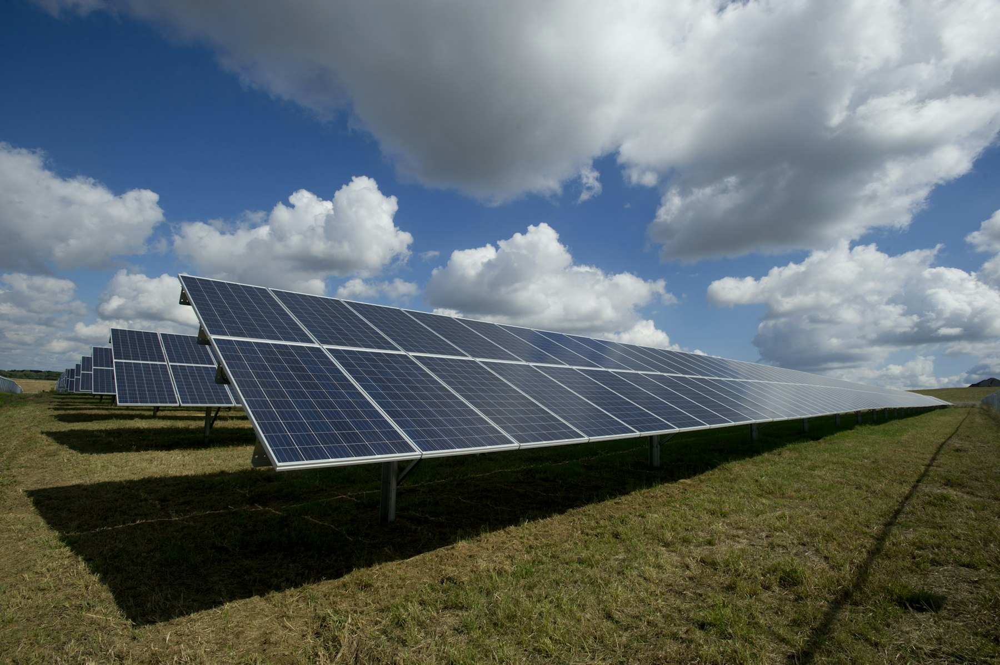

01
Investors

Investable pathways, partner-backed execution plans, and objective technical-commercial diligence.
Wasseren leads and supports investments in energy storage and renewable power assets, while enabling market entry, scale-up and commercialisation of next-generation energy technologies and products.
Wasseren works across the energy transition value chain to connect capital, technology and industry.
Investable pathways, partner-backed execution plans, and objective technical-commercial diligence.
Commercialisation acceleration through partner-chain structuring, funding stacks, and industry engagement.

Technology adoption support through compliance-ready deployment plans and demonstration programs.

Investment attraction, program design input, and sovereign capability outcomes including jobs and industry uplift.
We operate as an independent platform supporting the development and commercialisation of energy transition opportunities by combining project judgement, stakeholder alignment, and commercially workable structures across energy transition themes.
Wasseren focuses on sectors where capital, technology and execution capability must be aligned early. These themes reflect the areas where market entry, industrial translation and investment structuring can create the most practical value.
Recycling, electrolyte recovery, and commercial pathways.
Investment and commercialisation of renewable power assets.
Industrial decarbonisation and market development.
Policy evaluation and investment alignment for markets.
Selected examples of relevant experience across policy, commercialisation, market development and industrial collaboration. The emphasis is on work that connects strategic priorities with investable or executable outcomes.
Terminal evaluation for an IFC (World Bank Group) advisory program.
Industrialisation advisory with Australian universities and industry partners.
Led market and business-model studies for strategic investment decisions.
Supported low-carbon transition and partner engagement for heavy industry.
Based in Adelaide with national reach, Wasseren supports investors, industry and research partners seeking commercially grounded pathways in Australia’s energy transition market.
Early-stage development and investment opportunities across energy storage, hydrogen, and circular economy projects in Australia.
The focus is not only on identifying opportunities, but on understanding whether they can be matched with the right investors, delivery partners, legal pathway and technical support. This is where early commercial judgement materially improves project quality.

Supporting investor alignment, commercial screening and partnership discussions around utility-scale battery storage opportunities, with attention to approvals, connection pathway, delivery capability and capital fit.
Engaging around renewable generation and storage combinations where project origination, capital matching and structured collaboration can accelerate route-to-market and long-term asset value creation.
Exploring battery recycling, electrolyte and materials recovery, and adjacent circular economy opportunities where technology commercialisation, industrial partners and research institutions need to be connected in a practical way.
Wasseren operates at the intersection of capital, projects, industry and technology translation. The role is not limited to one narrow advisory function. It is to help move the right opportunity, with the right counterparties, into a workable commercial pathway.
Identify, screen and frame relevant opportunities across storage, renewable power, industrial decarbonisation and next-generation energy technologies.
Match investors, developers, industrial counterparties, researchers and market needs so the opportunity is strategically coherent before deeper work begins.
Support the commercial logic, engagement model and collaboration framework required to move from interest to a credible pathway for diligence or deployment.
Help maintain momentum through discussions, introductions, capability framing and practical coordination with the relevant technical, industrial and institutional parties.
Wasseren brings together a curated delivery ecosystem spanning strategy, legal, engineering, EPC and advisory support. This creates a practical end-to-end pathway from opportunity identification to execution readiness, while giving investors and partners a single, commercially aligned interface.
For investors entering Australia, assembling the right local team is often a critical barrier. Wasseren reduces that friction by coordinating the strategic, legal, technical and delivery-side relationships needed to move from interest to execution-ready engagement.

Market entry, commercial positioning, opportunity screening and counterpart alignment across energy storage, renewable power and next-generation energy technologies.
Access to coordinated legal and regulatory support for transaction preparation, structuring and relevant Australian approval pathways, including FIRB-related matters where required.
Technical and engineering inputs to support feasibility framing, project understanding, capability review and engagement with specialist parties across the development pathway.
Connection to delivery-side partners able to support project execution planning, constructability thinking and practical discussions around implementation pathways.
Commercial coordination, stakeholder communication, business-case framing and transaction support to help maintain momentum across multiple counterparties and workstreams.
Wasseren builds on experience across consulting, industry, public-sector engagement and international collaboration, with a strong emphasis on translating technical capability into investable or executable pathways.